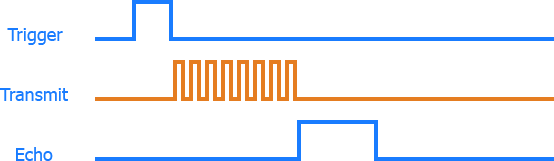

Robotika 2. óra
2025
Servo
TODO: servo wiring
Programozási kitérő
- mi van ha több van ugyanabból a perifériából?
- másoljuk le a kódot...
Programozási kitérő
- mi van ha több van ugyanabból a perifériából?
- másoljuk le a kódot...
Programozási kitérő
- mi van ha több van ugyanabból a perifériából?
- csoportosítsuk ki közös részeket
Programozási kitérő
pin.h
#pragma once
#include "pico/stdlib.h"
class Pin {
bool out;
bool _value;
public:
uint pin;
Pin(uint _pin, bool _out, bool _pull_up);
Pin(uint _pin, bool _out);
Pin(uint _pin);
~Pin();
void enable();
void disable();
bool value(bool __value = 0);
void toggle();
};
Programozási kitérő
pin.cpp
#include "pin.h"
#include "pico/stdlib.h"
Pin::Pin(uint _pin, bool _out, bool _pull_up)
: pin(_pin), out(_out), _value(0) {
enable();
if (_out)
value(_value);
if (_pull_up)
gpio_pull_up(pin);
}
Pin::Pin(uint _pin, bool _out) : Pin(_pin, _out, false) {}
Pin::Pin(uint _pin) : Pin(_pin, GPIO_OUT) {}
void Pin::enable() {
gpio_init(pin);
gpio_set_dir(pin, out);
}
void Pin::disable() {
gpio_deinit(pin);
}
Pin::~Pin() {
disable();
}
bool Pin::value(bool __value) {
_value = __value;
if (out) {
gpio_put(pin, _value);
return 0;
} else {
return gpio_get(pin);
}
}
void Pin::toggle() {
value(!_value);
}
config.h
Jó lenne ha a konfigurációt is ki lehetne csoportosítani...
config.h
#pragma once
#include "pico/stdlib.h"
const uint BUZZER_PIN = 4;
const uint BUTTON_PIN = 0;
const uint BUTTON_DEBOUNCE_INTERVAL_US = 5e5;
const uint ULTRA_TRIG_PIN = 20;
const uint ULTRA_ECHO_PIN = 19;
const uint HB_L1_PIN = 14;
const uint HB_L2_PIN = 15;
const uint HB_L_PWM = 10;
const uint HB_R1_PIN = 22;
const uint HB_R2_PIN = 11;
const uint HB_R_PWM = 21;
const uint HB_PWM_FREQ = 2000;
const uint SERVO_PIN = 16;
const float SERVO_MIN = 0.032f;
const float SERVO_MID = 0.075f;
const float SERVO_MAX = 0.130f;
const uint RGB_SENSOR_SDA_PIN = 26;
const uint RGB_SENSOR_SCL_PIN = 27;
const uint RGB_SENSOR_CHAN = 1;
const uint RGB_SENSOR_LED_PIN = 17;
const uint RGB_SENSOR_INTEGRATION_TIME = 40;
const uint RGB_SENSOR_GAIN = 3;
const uint PROXY_PIN = 2;
const uint ENC_LA = 6;
const uint ENC_LB = 7;
const uint ENC_RA = 8;
const uint ENC_RB = 9;
Motorok
- áram ⇒ forgás
- fun fact: fordítva is működik
- a forgás iránya az áram irányától függ
- de hogy adunk neki több áramot mint amit a pico tud?
- és hogy cseréljük meg a kábeleket menet közben???
H bridge

H bridge
TODO: H bridge wiring
H bridge
TODO: H bridge input values table
H bridge
TODO: add H bridge code when finalized
Ultra sensor
Ultra sensor

Ultra sensor

Ultra sensor
TODO: ultra wiring
Ultra sensor
ultra_sensor.h
#pragma once
#include "pico/stdlib.h"
#include "pin.h"
class UltraSensor {
static constexpr float METERS_PER_US = 0.0001715f;
static constexpr float MIN_DIST = 0.02f;
static constexpr float MAX_DIST = 4.0f;
volatile uint64_t last_dist;
public:
volatile bool enabled;
Pin trig;
Pin echo;
volatile uint64_t rise;
volatile uint64_t fall;
volatile uint64_t last_pulse;
UltraSensor(uint _trig, uint _echo);
void enable();
void disable();
float distance();
};
Ultra sensor
ultra_sensor.cpp
#include "ultra_sensor.h"
UltraSensor::UltraSensor(uint _trig, uint _echo)
: trig(_trig), echo(_echo, GPIO_IN) {
enabled = true;
last_dist = 0;
rise = 0;
fall = 0;
last_pulse = 0;
}
void UltraSensor::enable() {
if (enabled)
return;
enabled = true;
trig.enable();
echo.enable();
}
void UltraSensor::disable() {
if (!enabled)
return;
enabled = false;
trig.disable();
echo.disable();
}
float UltraSensor::distance() {
float dist;
if (rise > fall) {
dist = last_dist;
} else {
dist = (fall - rise) * METERS_PER_US;
last_dist = dist;
}
if (dist < MIN_DIST || dist > MAX_DIST)
return -1;
return dist;
}